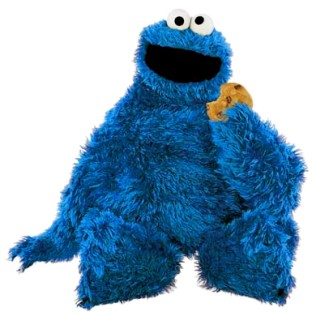

|  |
| 愛吃的餅乾怪獸倒底會收到什麼禮物呢?圖片來源: MuppetWiki |
{kind=link}
雖然到聖誕節還有一個月多的時間，可是我已經為我的幼時偶像餅乾怪獸(雖然，我倒底是過著怎麼樣的童年，怎麼會把經常胃口大開，吃相又不佳的餅乾怪獸當做偶像呢?!) 選好了聖誕禮物。那就是 …
噹噹噹 ，來自英國的摩卡公司 (Mocha) 的馬克杯:
 |
| Dunk Mug (Rene’s 不負責翻譯:”來浸一下”馬克杯) 圖片來源: Mocha |
看到圖片就了解這款馬克杯的設計理念，就是將裝餅乾的空間巧妙的整合到馬克杯裡面哪 ! 這對無時無刻都想吃餅乾的餅乾怪獸可說是一大福音呀 ! 尤其是，當你右手拿著裝著牛奶的馬克杯，左手拿著盛滿著餅乾的盤子，從廚房走到客廳的途中，突然食指大動，想要把餅乾浸一下熱牛奶吃時，通常會面臨到若有第三隻手該有多好的困境。(雖然，話又說回來，從廚房到客廳路是有多遠…) 這款馬克杯，貼心地為你解決了這個難題，那就是你再也不需要多餘的盤子來裝餅乾了 ! 你只需要這個將餅乾和杯子合為一體的杯子 !
可是喝這個馬克杯，可是要有技巧的，為了不讓放置在馬克杯凹槽裡的餅乾，在你仰天長喝時，往你身上投向自由的懷抱，裝著餅乾的凹槽是要朝著天空的。也因如此，摩卡公司貼心的推出左撇子和右撇子兩種選擇，這樣無論你是左撇子還是右撇子，都可以放心的使用這款馬克杯，而不至於弄得滿身餅乾屑了 !
而除了像蘋果電腦的代表白色外，摩卡公司還出了有波卡點 (Polka Dot) 的 Dunk Mug，可說是多了另一種活潑的選擇。
話又說回來，這個馬克杯本身還長得滿像把五官和手腳拿掉的多摩君呀!
 |
| NHK 的當家台柱多摩君!圖片來源: Allison’s Blog |
嘴巴張大大的多摩君是不是和把把手去掉，裝著餅乾的 Dunk Mug 有幾分相似呢 ! 所以說，Dunk Mug 本身長得就很像是一個滿嘴嚼著餅乾的餅乾怪獸呀 ! 不知道，是不是也有人發現這樣的關聯性了，所以在 google 的過程中，我居然就發現了手繪而成的餅乾怪獸 Dunk Mug ~~
 |
| 屬於餅乾怪獸專屬的Dunk Mug 呀~圖片來源: Etsy |
在這個網站上，標價23塊美金的手繪餅乾怪獸 Dunk Mug，還有送到 Everywhere else，我想那就是也有送到臺灣的意思啦 ! 這樣我不需要聖誕公公也可以輕鬆的上網購買餅乾怪獸 Dunk Mug，然後翹著二郎腿等著 Dunk Mug 送到家裡啦 ! 看到這裡，大家應該都發現了，其實我才是那個需要 Dunk Mug 懶惰又好吃的餅乾怪獸呀 ! 不過身為餅乾怪獸，也有一個實際的煩惱，為什麼照片裡的 Dunk Mug，怎麼都只有裝兩片餅乾呀 ! 兩片不夠吃呀~~~ >O<